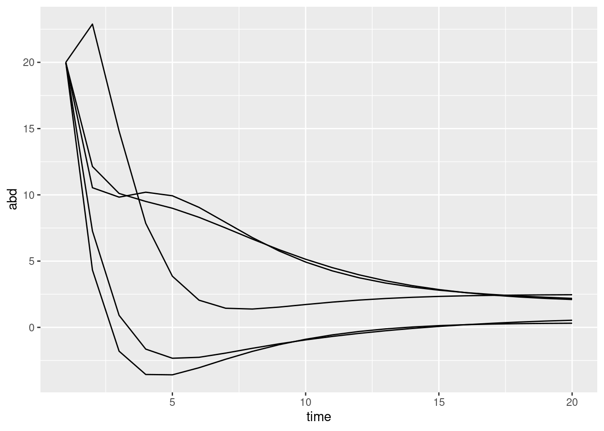
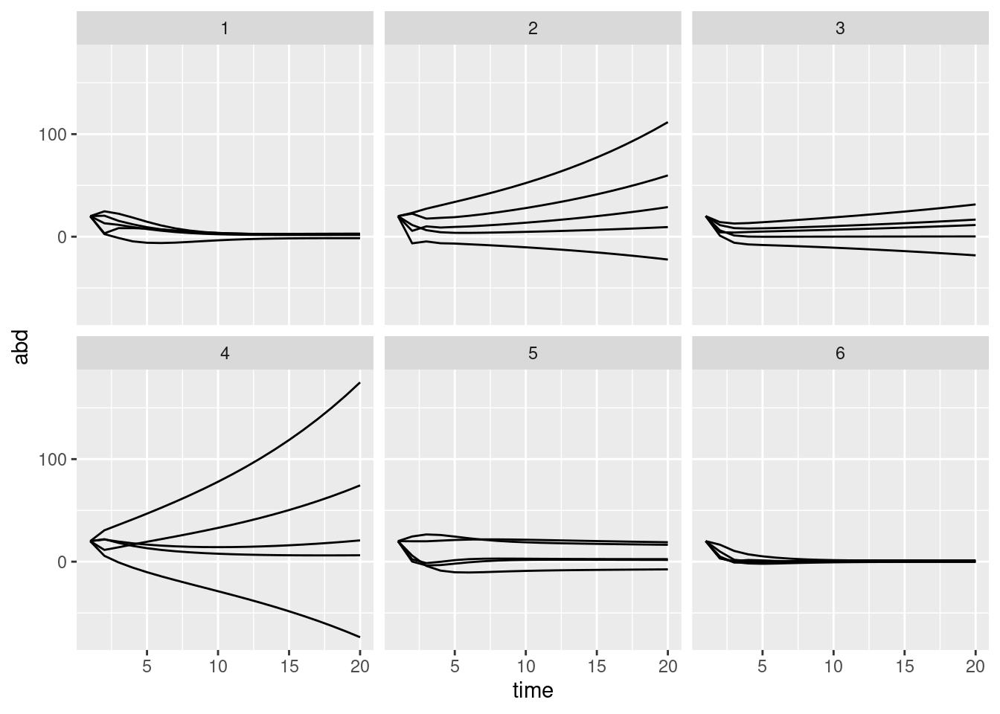
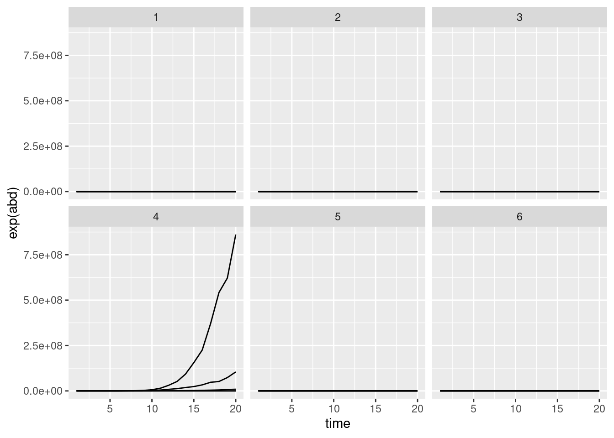
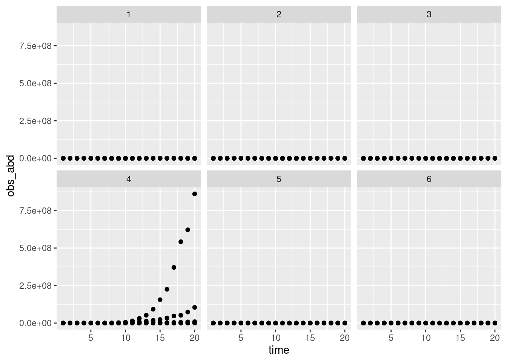

library(tidyverse)The MARS model is really commonly used to infer interaction strength from a time series of population sizes.
here is it is in R:
S <- 5
B <- matrix(rnorm(S*S, mean = 0, sd = .2), ncol=S, nrow=S)
diag(B) <- runif(S)
A <- runif(S)
nsteps <- 20
pop_sizes <- matrix(0, nrow = S, ncol = nsteps)
start <- rep(20, times = S)
pop_sizes[,1] <- start
for (i in 2:nsteps){
pop_sizes[,i] <- A + B %*% pop_sizes[,i-1]
}
pop_sizes_long <- pop_sizes |>
as.data.frame() |>
rownames_to_column(var = "sp") |>
pivot_longer(-sp, names_to = "time", values_to = "abd") |>
mutate(time = parse_number(time))
pop_sizes_long |>
ggplot(aes(x = time, y = abd, group = sp)) + geom_line()
let’s run a few different simulations just to see
some_simulations <- map_df(1:6,
\(x) {
S <- 5
B <- matrix(rnorm(S*S, mean = 0, sd = .2),
ncol=S,
nrow=S)
diag(B) <- runif(S)
A <- runif(S)
nsteps <- 20
pop_sizes <- matrix(0, nrow = S, ncol = nsteps)
start <- rep(20, times = S)
pop_sizes[,1] <- start
for (i in 2:nsteps){
pop_sizes[,i] <- A + B %*% pop_sizes[,i-1]
}
pop_sizes_long <- pop_sizes |>
as.data.frame() |>
rownames_to_column(var = "sp") |>
pivot_longer(-sp,
names_to = "time",
values_to = "abd") |>
mutate(time = parse_number(time))},
.id = "sim")
some_simulations |>
ggplot(aes(x = time, y = abd, group = sp)) + geom_line() +
facet_wrap(~sim)
The MARS model also allows for some variation to occur at each time step:
some_simulations <- map_df(1:6,
\(x) {
S <- 5
B <- matrix(rnorm(S*S, mean = 0, sd = .1),
ncol=S,
nrow=S)
diag(B) <- runif(S, min = .3, max = .6)
A <- rnorm(S, mean = 2, sd = .2)
nsteps <- 20
pop_sizes <- matrix(0, nrow = S, ncol = nsteps)
start <- rep(3, times = S)
pop_sizes[,1] <- start
for (i in 2:nsteps){
pop_sizes[,i] <- A +
B %*% pop_sizes[,i-1] +
## variation at each timestep
rnorm(S, mean = 0, sd = .1)
}
pop_sizes_long <- pop_sizes |>
as.data.frame() |>
rownames_to_column(var = "sp") |>
pivot_longer(-sp,
names_to = "time",
values_to = "abd") |>
mutate(time = parse_number(time))},
.id = "sim")
some_simulations |>
ggplot(aes(x = time,
y = exp(abd),
group = sp)) + geom_line() +
facet_wrap(~sim)
Finally, the observations around these are poisson variables:
some_simulations |>
mutate(obs_abd = rpois(n = length(abd), lambda = exp(abd))) |>
ggplot(aes(x = time,
y = obs_abd,
group = sp)) + geom_point() +
facet_wrap(~sim)
write the model in Stan
library(cmdstanr)This is cmdstanr version 0.8.1.9000- CmdStanR documentation and vignettes: mc-stan.org/cmdstanr- CmdStan path: /home/andrew/software/cmdstan- CmdStan version: 2.34.1
A newer version of CmdStan is available. See ?install_cmdstan() to install it.
To disable this check set option or environment variable cmdstanr_no_ver_check=TRUE.#|class-output: stan
#|
mars_poisson_prior <- cmdstan_model(here::here("posts/2024-09-11-MARS/mars_poisson_prior.stan"))
mars_poisson_priordata {
int<lower=1> S;
// number of timepoints NOT including the first week of setup
int<lower=2> n_time;
array[S*n_time] int<lower=0> abds;
vector[S] starting;
}
parameters {
vector[S*(S-1)] offdiag_B;
vector<lower=0,upper=1>[S] diag_B;
vector[S] A;
matrix[S, n_time] error;
real<lower=0> sigma_error;
}
transformed parameters {
// make the B matrix
matrix[S, S] B;
for (s in 1:S){
B[s, s] = diag_B[s];
}
{
int idx; // index for going into the off-diag vector
idx = 1;
// Fill the upper diagonal
for (i in 1:(S-1)) {
for (j in (i+1):S) {
B[i, j] = offdiag_B[idx];
idx += 1;
}
}
// Fill the lower diagonal
for (i in 2:S) {
for (j in 1:(i-1)) {
B[i, j] = offdiag_B[idx];
idx += 1;
}
}
}
// make the true abds
matrix[S, n_time] true_abd;
true_abd[,1] = A + B * starting + error[,1];
for (t in 2:n_time){
true_abd[,t] = A + B * true_abd[,t-1] + error[,t];
}
}
model {
offdiag_B ~ normal(0, .2);
diag_B ~ beta(.6*7, .4*7);
A ~ normal(0.2, .2);
to_vector(error) ~ normal(0, sigma_error);
sigma_error ~ exponential(10);
// likelihood
// abds ~ poisson_log(to_vector(true_abd));
}
generated quantities{
array[n_time, S] int sim_abds;
for (i in 1:n_time){
sim_abds[i,] = poisson_log_rng(true_abd[,i]);
}
}mars_poisson_prior_samp <- mars_poisson_prior$sample(data = list(
S = 4,
n_time = 15,
abds = rep(1, times = 4*15),
starting = rep(log(20), 4)),
chains = 1,
iter_sampling = 500
)Running MCMC with 1 chain...
Chain 1 Iteration: 1 / 1500 [ 0%] (Warmup)
Chain 1 Iteration: 100 / 1500 [ 6%] (Warmup)
Chain 1 Iteration: 200 / 1500 [ 13%] (Warmup)
Chain 1 Iteration: 300 / 1500 [ 20%] (Warmup)
Chain 1 Iteration: 400 / 1500 [ 26%] (Warmup)
Chain 1 Iteration: 500 / 1500 [ 33%] (Warmup)
Chain 1 Iteration: 600 / 1500 [ 40%] (Warmup)
Chain 1 Iteration: 700 / 1500 [ 46%] (Warmup)
Chain 1 Iteration: 800 / 1500 [ 53%] (Warmup)
Chain 1 Iteration: 900 / 1500 [ 60%] (Warmup)
Chain 1 Iteration: 1000 / 1500 [ 66%] (Warmup)
Chain 1 Iteration: 1001 / 1500 [ 66%] (Sampling)
Chain 1 Exception: poisson_log_rng: Log rate parameter[2] is 21.9629, but must be less than 20.794415 (in '/tmp/RtmpDijQKC/model-710019bf0eaf.stan', line 66, column 4 to column 49) Chain 1 Exception: poisson_log_rng: Log rate parameter[2] is 21.9629, but must be less than 20.794415 (in '/tmp/RtmpDijQKC/model-710019bf0eaf.stan', line 66, column 4 to column 49)Chain 1 Exception: poisson_log_rng: Log rate parameter[2] is 21.3356, but must be less than 20.794415 (in '/tmp/RtmpDijQKC/model-710019bf0eaf.stan', line 66, column 4 to column 49) Chain 1 Exception: poisson_log_rng: Log rate parameter[2] is 21.3356, but must be less than 20.794415 (in '/tmp/RtmpDijQKC/model-710019bf0eaf.stan', line 66, column 4 to column 49)Chain 1 Exception: poisson_log_rng: Log rate parameter[2] is 21.8943, but must be less than 20.794415 (in '/tmp/RtmpDijQKC/model-710019bf0eaf.stan', line 66, column 4 to column 49) Chain 1 Exception: poisson_log_rng: Log rate parameter[2] is 21.8943, but must be less than 20.794415 (in '/tmp/RtmpDijQKC/model-710019bf0eaf.stan', line 66, column 4 to column 49)Chain 1 Exception: poisson_log_rng: Log rate parameter[4] is 21.8778, but must be less than 20.794415 (in '/tmp/RtmpDijQKC/model-710019bf0eaf.stan', line 66, column 4 to column 49) Chain 1 Exception: poisson_log_rng: Log rate parameter[4] is 21.8778, but must be less than 20.794415 (in '/tmp/RtmpDijQKC/model-710019bf0eaf.stan', line 66, column 4 to column 49)Chain 1 Exception: poisson_log_rng: Log rate parameter[1] is 22.5174, but must be less than 20.794415 (in '/tmp/RtmpDijQKC/model-710019bf0eaf.stan', line 66, column 4 to column 49) Chain 1 Exception: poisson_log_rng: Log rate parameter[1] is 22.5174, but must be less than 20.794415 (in '/tmp/RtmpDijQKC/model-710019bf0eaf.stan', line 66, column 4 to column 49)Chain 1 Exception: poisson_log_rng: Log rate parameter[4] is 21.6144, but must be less than 20.794415 (in '/tmp/RtmpDijQKC/model-710019bf0eaf.stan', line 66, column 4 to column 49) Chain 1 Exception: poisson_log_rng: Log rate parameter[4] is 21.6144, but must be less than 20.794415 (in '/tmp/RtmpDijQKC/model-710019bf0eaf.stan', line 66, column 4 to column 49)Chain 1 Iteration: 1100 / 1500 [ 73%] (Sampling)
Chain 1 Exception: poisson_log_rng: Log rate parameter[1] is 21.3019, but must be less than 20.794415 (in '/tmp/RtmpDijQKC/model-710019bf0eaf.stan', line 66, column 4 to column 49) Chain 1 Exception: poisson_log_rng: Log rate parameter[1] is 21.3019, but must be less than 20.794415 (in '/tmp/RtmpDijQKC/model-710019bf0eaf.stan', line 66, column 4 to column 49)Chain 1 Exception: poisson_log_rng: Log rate parameter[4] is 23.2795, but must be less than 20.794415 (in '/tmp/RtmpDijQKC/model-710019bf0eaf.stan', line 66, column 4 to column 49) Chain 1 Exception: poisson_log_rng: Log rate parameter[4] is 23.2795, but must be less than 20.794415 (in '/tmp/RtmpDijQKC/model-710019bf0eaf.stan', line 66, column 4 to column 49)Chain 1 Exception: poisson_log_rng: Log rate parameter[3] is 24.179, but must be less than 20.794415 (in '/tmp/RtmpDijQKC/model-710019bf0eaf.stan', line 66, column 4 to column 49) Chain 1 Exception: poisson_log_rng: Log rate parameter[3] is 24.179, but must be less than 20.794415 (in '/tmp/RtmpDijQKC/model-710019bf0eaf.stan', line 66, column 4 to column 49)Chain 1 Exception: poisson_log_rng: Log rate parameter[4] is 26.9012, but must be less than 20.794415 (in '/tmp/RtmpDijQKC/model-710019bf0eaf.stan', line 66, column 4 to column 49) Chain 1 Exception: poisson_log_rng: Log rate parameter[4] is 26.9012, but must be less than 20.794415 (in '/tmp/RtmpDijQKC/model-710019bf0eaf.stan', line 66, column 4 to column 49)Chain 1 Iteration: 1200 / 1500 [ 80%] (Sampling)
Chain 1 Exception: poisson_log_rng: Log rate parameter[4] is 24.1329, but must be less than 20.794415 (in '/tmp/RtmpDijQKC/model-710019bf0eaf.stan', line 66, column 4 to column 49) Chain 1 Exception: poisson_log_rng: Log rate parameter[4] is 24.1329, but must be less than 20.794415 (in '/tmp/RtmpDijQKC/model-710019bf0eaf.stan', line 66, column 4 to column 49)Chain 1 Exception: poisson_log_rng: Log rate parameter[2] is 22.679, but must be less than 20.794415 (in '/tmp/RtmpDijQKC/model-710019bf0eaf.stan', line 66, column 4 to column 49) Chain 1 Exception: poisson_log_rng: Log rate parameter[2] is 22.679, but must be less than 20.794415 (in '/tmp/RtmpDijQKC/model-710019bf0eaf.stan', line 66, column 4 to column 49)Chain 1 Exception: poisson_log_rng: Log rate parameter[2] is 23.3159, but must be less than 20.794415 (in '/tmp/RtmpDijQKC/model-710019bf0eaf.stan', line 66, column 4 to column 49) Chain 1 Exception: poisson_log_rng: Log rate parameter[2] is 23.3159, but must be less than 20.794415 (in '/tmp/RtmpDijQKC/model-710019bf0eaf.stan', line 66, column 4 to column 49)Chain 1 Exception: poisson_log_rng: Log rate parameter[2] is 22.1738, but must be less than 20.794415 (in '/tmp/RtmpDijQKC/model-710019bf0eaf.stan', line 66, column 4 to column 49) Chain 1 Exception: poisson_log_rng: Log rate parameter[2] is 22.1738, but must be less than 20.794415 (in '/tmp/RtmpDijQKC/model-710019bf0eaf.stan', line 66, column 4 to column 49)Chain 1 Exception: poisson_log_rng: Log rate parameter[4] is 21.1828, but must be less than 20.794415 (in '/tmp/RtmpDijQKC/model-710019bf0eaf.stan', line 66, column 4 to column 49) Chain 1 Exception: poisson_log_rng: Log rate parameter[4] is 21.1828, but must be less than 20.794415 (in '/tmp/RtmpDijQKC/model-710019bf0eaf.stan', line 66, column 4 to column 49)Chain 1 Iteration: 1300 / 1500 [ 86%] (Sampling)
Chain 1 Exception: poisson_log_rng: Log rate parameter[1] is 21.0743, but must be less than 20.794415 (in '/tmp/RtmpDijQKC/model-710019bf0eaf.stan', line 66, column 4 to column 49) Chain 1 Exception: poisson_log_rng: Log rate parameter[1] is 21.0743, but must be less than 20.794415 (in '/tmp/RtmpDijQKC/model-710019bf0eaf.stan', line 66, column 4 to column 49)Chain 1 Exception: poisson_log_rng: Log rate parameter[1] is 23.965, but must be less than 20.794415 (in '/tmp/RtmpDijQKC/model-710019bf0eaf.stan', line 66, column 4 to column 49) Chain 1 Exception: poisson_log_rng: Log rate parameter[1] is 23.965, but must be less than 20.794415 (in '/tmp/RtmpDijQKC/model-710019bf0eaf.stan', line 66, column 4 to column 49)Chain 1 Exception: poisson_log_rng: Log rate parameter[2] is 22.0748, but must be less than 20.794415 (in '/tmp/RtmpDijQKC/model-710019bf0eaf.stan', line 66, column 4 to column 49) Chain 1 Exception: poisson_log_rng: Log rate parameter[2] is 22.0748, but must be less than 20.794415 (in '/tmp/RtmpDijQKC/model-710019bf0eaf.stan', line 66, column 4 to column 49)Chain 1 Iteration: 1400 / 1500 [ 93%] (Sampling)
Chain 1 Iteration: 1500 / 1500 [100%] (Sampling)
Chain 1 finished in 1.7 seconds.Warning: 1 of 1 chains had an E-BFMI less than 0.3.
See https://mc-stan.org/misc/warnings for details.library(tidybayes)
mars_poisson_prior_samp$draws() |>
gather_draws(sim_abds[time, sp], ndraws = 12) |>
ggplot(aes(x = time, y = .value, group = sp)) + geom_point() +
facet_wrap(~.draw, scales = "free_y", ncol = 4)Warning: Removed 60 rows containing missing values or values outside the scale range
(`geom_point()`).library(tidybayes)
mars_poisson_prior_samp$draws() |>
gather_draws(true_abd[sp, time], ndraws = 12) |>
ggplot(aes(x = time, y = exp(.value), group = sp)) +
geom_line() +
facet_wrap(~.draw, scales = "free_y", ncol = 4)